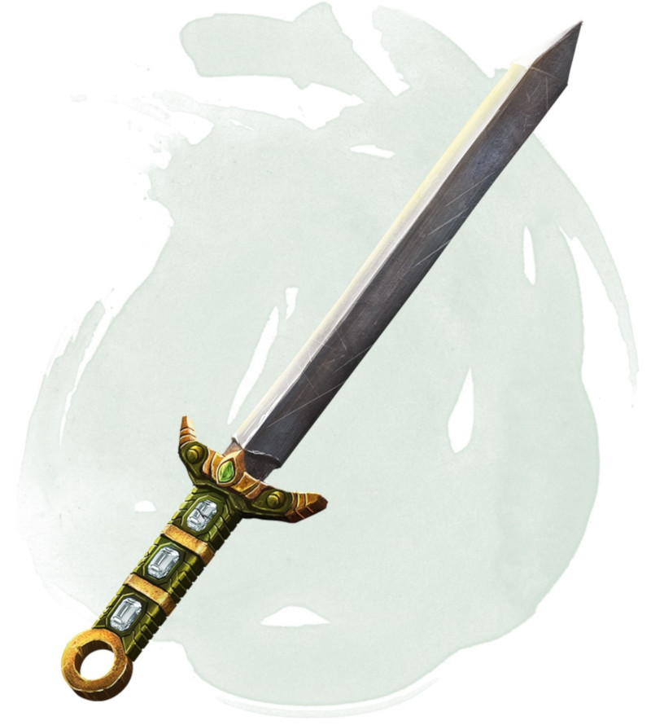

Luck Blade
Weapon (any sword), legendary (requires attunement)
You gain a +1 bonus to attack and damage rolls made with this magic weapon. While the sword is on your person, you also gain a +1 bonus to saving throws.
Luck. If the sword is on your person, you can call on its luck (no action required) to reroll one attack roll, ability check, or saving throw you dislike. You must use the second roll. This property can't be used again until the next dawn.
Wish. The sword has 1d4 - 1 charges. While holding it, you can use an action to expend 1 charge and cast the wish spell from it. This property can't be used again until the next dawn. The sword loses this property if it has no charges.
Luck. If the sword is on your person, you can call on its luck (no action required) to reroll one attack roll, ability check, or saving throw you dislike. You must use the second roll. This property can't be used again until the next dawn.
Wish. The sword has 1d4 - 1 charges. While holding it, you can use an action to expend 1 charge and cast the wish spell from it. This property can't be used again until the next dawn. The sword loses this property if it has no charges.
Dungeon Master´s Guide (SRD)
